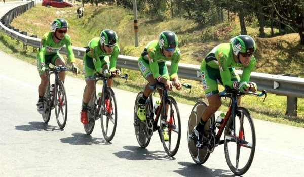

Boyacá Raza De Campeones"

El equipo Boyacá Raza de Campeones viajará a Europa el próximo lunes para afrontar un calendario de pruebas UCI hasta el mes de agosto, como la Vuelta a Castilla y León, la Vuelta a Asturias o la Vuelta a Portugal. El `desembarco´ será de diez corredores. El equipo colombiano continental regresa a Europa con un bloque formado por jóvenes talentos que aspiran a dar un paso adelante en su formación y dar el salto a la élite del pelotón profesional. Se trata de un proyecto lanzado y apadrinado por Nairo Quintana (Movistar) y que cuenta con Próspero Chaparro al frente como coordinador técnico y Luis Ricardo Mesa y Jorge Iván González como directores deportivos.
En el próximo mes, el Boyacá Raza de Campeones afrontará cuatro vueltas:
- 15-17 abril: Vuelta a Castilla y León (2.1, España).
- 30 abril-2 mayo: Vuelta a Asturias (2.1, España).
- 7-8 mayo: Vuelta a Madrid (2.1, España).
- 13-15 mayo: Volta Internacional Cova da Beira (2.1, Portugal).
La Vuelta a Portugal (2.1), a disputar entre el 27 de julio y el 7 de agosto, será la culminación de su calendario europeo.
La formación colombiana ya ha exhibido su fuerza esta temporada pues el Boyacá Raza de Campeones se coronó como mejor equipo en la Vuelta a la Independencia Internacional (2.2, República Dominicana), disputada el pasado mes de marzo, y Diego Ochoa ganó una etapa y acabó segundo en la clasificación general.